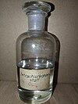

carbon-tetrachloride

Definition: Carbon tetrachloride, also known by many other names (such as tetrachloromethane, also recognised by the IUPAC, carbon tet in the cleaning industry, Halon-104 in firefighting, and Refrigerant-10 in HVACR) is a chemical compound with the chemical formula CCl4. It is a colourless liquid with a "sweet" smell that can be detected at low levels. It is practically incombustible at lower temperatures. It was formerly widely used in fire extinguishers, as a precursor to refrigerants and as a cleaning agent, but has since been phased out because of environmental and safety concerns. Exposure to high concentrations of carbon tetrachloride (including vapor) can affect the central nervous system and degenerate the liver and kidneys. Prolonged exposure can be fatal.
Source: Wikipedia
Wikipedia Page (Something wrong with this association? Let us know.)
Wikidata Page (Something wrong with this association? Let us know.)